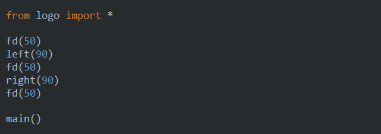
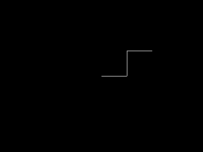
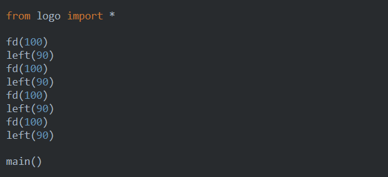
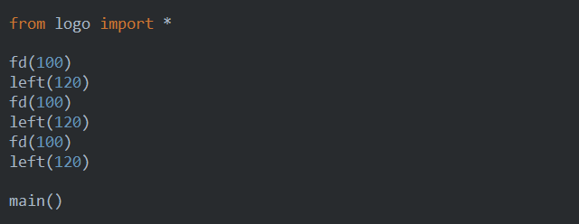
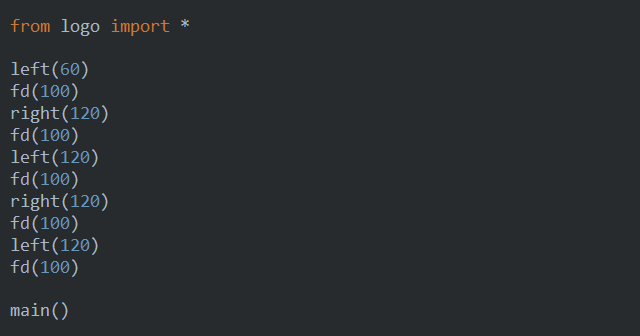
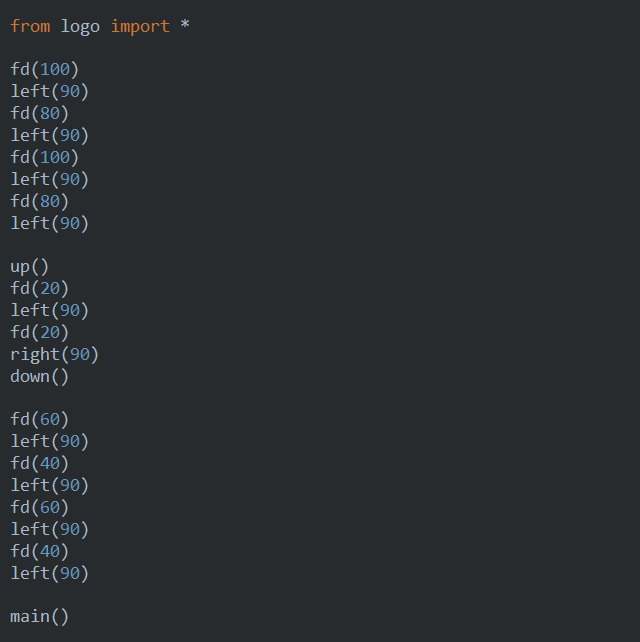
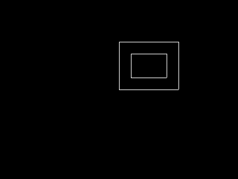
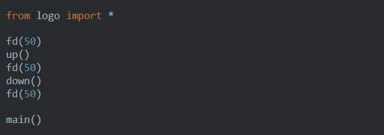

Lesson 4 - more logo¶
It is time for more operations with logo. In addition to just moving forward and drawing, virtual robot (turtle) can do more sophisticated things.
Direction¶
By issuing left and right commands we can instruct turtle to change direction. Both commands accept a single parameter - an angle. left turns turtle left by angle degrees, right does the same to the right. You can see an example below:
This should produce the following polygonal line:
That is getting interesting, huh?
Let’s try drawing some more figures:
A square¶
A triangle¶
An interesting figure¶
A star¶
This time you can just copy and paste the program from here:
from logo import *
fd(100)
right(144)
fd(100)
right(144)
fd(100)
right(144)
fd(100)
right(144)
fd(100)
right(144)
main()
Pen control¶
The turtle can handle two more commands, up and down:
- up tells the turtle to stop drawing when it moves
- down instructs the turtle to resume the drawing during move
This allows to draw disjoint figures, such as the following:
You should see two rectangles:
Taking one of our first examples, imagine, what would be the picture created by the following program:
